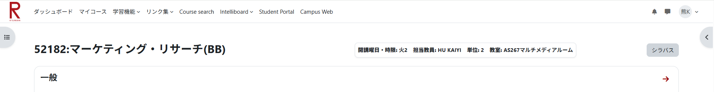

インストールしていただきありがとうございます！
「Extension for Moodle+R」は、Moodle+Rを使いやすく改善する拡張機能です。
使い方
- 画面右上の パズルアイコン をクリックし、この拡張機能を右クリックしてピン留めしてください。
- ツールバーに追加されたアイコンをクリックするとメニューが開き、各機能をオン・オフできます。
機能の紹介
-
ベターレイアウト: 時間割を見やすくし、画面を広く使えます。
適用前
 適用後
適用後
- 教職員モード: リボンに教職員向けのリンク（教職員ポータル、Responや打刻など）を直接アクセスできるように追加します。
- ホームスキップ: 使わないトップページをスキップして直接ダッシュボードに遷移します。
-
シラバス情報の自動取得: Moodleの授業ページに「シラバス」ボタンを追加し、ワンクリックでアクセス。さらに、一度シラバスを開くだけで開講曜日・時限、担当教員、単位数、教室のデータを自動取得し、Moodleのタイトル横からいつでも確認できるようにします。

-
ダークモード: 目に優しい暗めの配色に変更します。

免責事項
本拡張機能は個人が開発した非公式なツールであり、大学およびMoodle公式とは一切関係ありません。
本ツールの利用によって生じたいかなる直接的または間接的なトラブルや損害についても、開発者は一切の責任を負いません。あらかじめご了承のうえ、自己責任にてご利用ください。
また、大学側のシステム（Moodleやシラバス）の仕様変更により、予告なく機能が正常に動作しなくなる場合があります。
本拡張機能は予告、告知なく更新・改修・公開停止されることがあります。ご了承ください。
サポートと連絡先
不具合の報告やご要望、ご質問等はX（Twitter）またはInstagramまでお気軽にご連絡ください。
X (@somakumagai) /
Instagram (@somakumagai)
もしこの拡張機能が役に立ったと感じていただけたら、開発のサポートをしていただけると嬉しいです。（未実装）
Buy Me a Coffee